The accessibility clinic for websites
a11ymedic
Find accessibility problems. Get the exact fix.
RxImage without alt textcritical
<img src="team.jpg">
<img src="team.jpg" alt="Our bakers at work">
The accessibility clinic for websites
Find accessibility problems. Get the exact fix.
